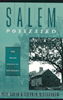

|
Salem
Possessed:
The Social Origins of Witchcraft Reviewed by Kate Murphy |

|
|
Salem Witch Trials in History and Literature Paul Boyer and Stephen Nissenbaum's Salem Possessed
explores the pre-existing social and economic divisions within the
Salem Village community, as an entry point to understand the
accusations of witchcraft in 1692. According to Boyer and
Nissenbaum, the village split into two factions: one interested in
gaining more autonomy for Salem Village and led by the Putnam
family, and the other, interested in the mercantile and political
life of Salem Town and led by the Porter family. Boyer and
Nissenbaum's deft and imaginative look at local records reveals the
contours of communal life in colonial New England and provides a
model through which to understand the witchcraft accusations as
part of a larger pattern of communal strife. Such a tight focus on
communal and social causes for the events of 1692, however, loses
sight of the religious, gendered, and individual forces that played
equally pivotal roles in the outbreak. Boyer and Nissenbaum's explanation for the outbreak of witchcraft accusations in Salem hinges on an understanding of the economic, political and personal issues which divided village long before 1692. At bottom, geography and history divided Salem Village and Salem Town. Situated in the interior from the bustling mercantile town of Salem, Salem Village remained primarily an agricultural community. Boyer and Nissenbaum argue that this polarization of interests between the town and the village created a similar divide within the village itself. One faction, led by the Putnam family, most identified itself with the traditional agricultural activities of the village and consequently supported the village minister, Samuel Parris, and the drive for greater autonomy from Salem Town. The opposing faction, led by the Porter family, identified itself with the mercantile town, near which most of the Porter faction lived. In opposition to the Putnam faction, the Porters opposed the minister and wanted greater association with the town of Salem. The bitter and contentious disputes between the two factions within Salem Village both before and after the witchcraft outbreak, demonstrate a pattern of communal conflict which transcended the events of 1692. These same fault-lines, according to Boyer and Nissenbaum, explain the pattern of witchcraft accusations. The same villagers who stood with the Putnams to support Parris and petition for an independent church for the village, show up as complaints on witchcraft indictments in 1692. Similarly, many of the accused witches in Salem belonged to the Porter faction or, according to Boyer and Nissenbaum, represented the projection of the grievances caused by such factionalism upon more obtainable targets like Rebecca Nurse and Martha Cory. Through such a reconstruction of the factional village of Salem, Boyer and Nissenbaum explain the Salem witchcraft episode from within the larger history of the transformation to a modern capitalist society, and the divisions and conflicts that naturally arose from this change. Boyer and Nissenbaum's intensive focus on the dynamics of Salem Village blind them to other dynamics contributing to the witchcraft outbreak. Although the outbreak originated in Salem Village, the majority of the accused hailed from surrounding villages such as Andover, removed from the Putnam/Porter disputes and known for its harmonious community life. As Bernard Rosenthal points out, "the study stops short of inquiring into why the outbreak spread throughout Massachusetts Bay and caught in its net people having nothing to do with the quarrels of that particular village." The dynamics of village dispute can help to explain the origin of the outbreak, but cannot explain why this outbreak became an epidemic.
Any complete understanding of the Salem witchcraft accusations most also attempt to explain why the vast majority of accused witches were women. Carol Karlsen included Salem Possessed in her critique of histories of Salem which, "note that witches were usually women, most works pass over the fact quickly or conclude that witches were scapegoats for hostilities and tensions that had little to do with sex or gender." Although the directions the accusations took undoubtedly reflected pre-existing tensions within the community, Karlsen argues that the accusations also reflected societal ideas about women and the ways men reconciled changes in gender roles. Although the intensity of Boyer and Nissenbaum's focus on Salem
Village obscured forces foundational to a complete understanding of
the events of 1692, through Salem Possessed, in the words of
one reviewer, "new stage in our understanding of the dynamics of
the processes of community development and social conflicts has
been reached." Boyer and Nissenbaum help us to understand not only
the ways in which the outbreak of accusations in Salem was part of
a larger pattern of communal conflict, but also serve to warn us
that the divisive powers such conflicts have the potential to
instigate modern witch hunts. |
|